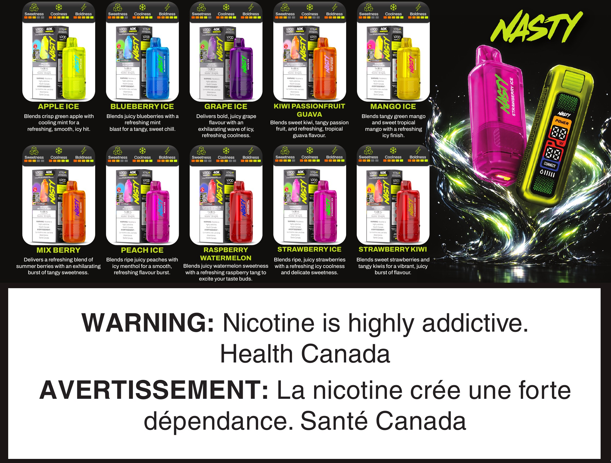

Created for the Versa launch in Adobe Illustrator, built fully in CMYK for print — a bilingual flavour menu: the device on one side, ten flavours on the other, Health Canada warning included. Print work, end to end: layout, type, colour, and press-ready files.
View the original print PDF → Full vector quality, as delivered for print.
Drawn and laid out in Adobe Illustrator, vector throughout — type, device details, and flavour panels all stay sharp at any size.
Built fully in CMYK for print, not a screen file converted after the fact — colour is press-accurate from the start.
English and French throughout, including the Health Canada nicotine warning, placed per regulation.
